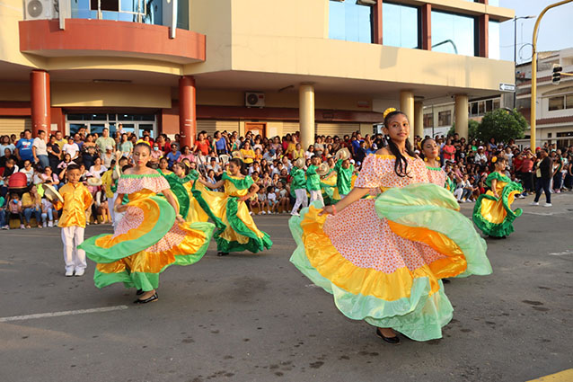
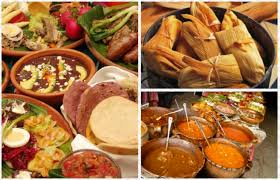
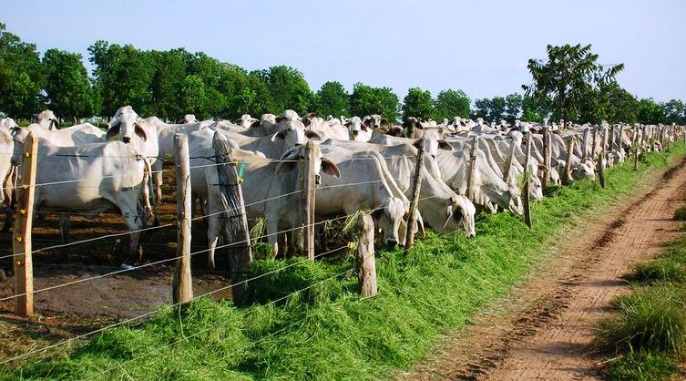

| HOME | GALERIA | SITUACION GEOGRAFICA | COSTUMBRES | SITIOS TURISTICOS |
Santa Rosa, como capital de La Pampa, tiene costumbres que combinan tradiciones rurales, fiestas populares y vida de ciudad. La gente mantiene
un estilo de vida tranquilo, con fuertes vínculos comunitarios y amor por las tradiciones.

En Santa Rosa se disfrutan comidas tradicionales argentinas como:

Al ser una ciudad con fuerte raíz rural, son comunes actividades como:

Los vecinos de Santa Rosa disfrutan de actividades al aire libre, como caminar por la plaza, visitar el Parque Don Tomás, reunirse en familia
los fines de semana, y participar en actividades barriales y deportivas.